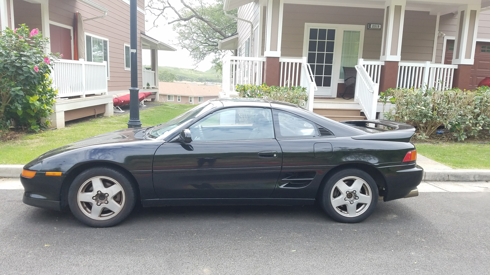

1993 Toyota MR2 Turbo Build
Some time in 2018:
This was when I first started driving the MR2. We haved owned this car since 2016 to my knowledge. The MR2 has been through several moves since ownership. From El Paso, TX -> Honolulu, HI -> Rockledge, FL -> Seattle, WA. In Honolulu the head gasket goes and it is time for a rebuild.
This is what the engine looked like before I start to disassemble the engine, to get to the head gasket.
This was right after I cleaned up the surface of the previous gasket material. That was upgraded with a Cometic Multi-layer-steel (MLS) gasket.
I brought the block and the head to machine shop to get cleaned up to prep for a fresh gasket. We previously already had 87mm forged pistons and rods.
After torqueing down the head to the block, we set the timing. It's kinda satisfying seeing a clean engine.

This is what the engine looked like almost fully assembled. I would later add the turbo and intake manifold. This is the last photo of the engine that I have. I ended up dropping the engine into the car and moved to Florida soon after. Where I have video of it running. More to come in the future.